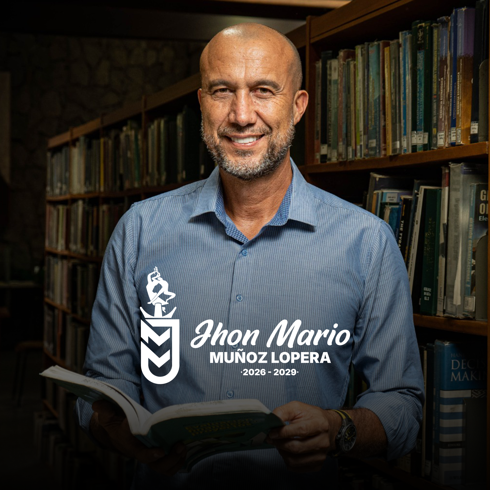

"Conocimiento, coherencia y experiencia para liderar el futuro de la UdeA."

10+
Libros Publicados
3
Años como Decano
100%
Defensa Pública
24/7
Compromiso UdeA
Enfoques territoriales, de diversidades, participativos y de género, dividiéndose en nueve retos agrupados en tres categorías.
Son los pilares políticos y administrativos para posicionar a la Universidad frente a la sociedad y garantizar su viabilidad.
Articulación de misiones para resolver problemas públicos, impulsar ciencia ciudadana y fortalecer la Estación Spin-Off como innovación.
Exigir financiación justa, crear Modelo 2026-2040 y diversificar ingresos sin afectar derechos laborales o calidad académica.
Gobierno democrático, voto ponderado, Pacto de Convivencia y bienestar integral (salud mental, apoyo alimentario).
Corresponden a la razón de ser académica de la Universidad: docencia, investigación y extensión.
Incorporar IA, Big Data y robótica ética. Promover formación docente, posgrados y modelos multimodales y virtuales.
Investigación en posconflicto, género y medioambiente. Sistema de indicadores de impacto social para políticas públicas.
Articular docencia/investigación con problemas sociales. Participar en políticas públicas y afianzar lazos con egresados.
Son ejes que atraviesan e integran todo el quehacer universitario.
Transición ecológica con Política de Sostenibilidad, currículos verdes, cero papel e infraestructura sostenible.
Fortalecer la Unidad Especial de Paz, trabajo con víctimas/firmantes y vinculación a procesos de negociación nacional.
Justicia socioespacial, internacionalización (doble titulación) y gestión administrativa digital al servicio de la academia.
Nacido en Ituango, Antioquia (1970). Destacado académico, investigador y líder profesoral con dominio de italiano e inglés. Cuenta con una trayectoria de cerca de 25 años como docente e investigador en la Universidad de Antioquia.
Docente e investigador en la UdeA desde 1999 (de planta desde 2003). También ha sido docente en UNAULA, ITM, ESAP y Colmayor. Principales cargos en la UdeA:
Autor/compilador de más de 10 libros ("Fronteras invisibles", "Polifonía para pensar una pandemia"). Amplia escritura en revistas especializadas sobre conflictos y tutor de múltiples tesis de pregrado, maestría y doctorado.
Organizador y ponente en decenas de congresos. Liderazgo en foros sobre paz territorial y proyectos de investigación/extensión como el Plan de Desarrollo Cultural de Bello.
Una vida dedicada a la firme defensa de la educación pública y los derechos profesorales.
Presidente de ASOPRUDEA (Asociación de Profesores de la Universidad de Antioquia), representando firmemente los intereses del estamento docente frente a las diferentes instancias.
Vocero histórico y representante destacado en la Mesa Nacional de Diálogo con el Gobierno Nacional durante las movilizaciones por la educación superior en 2018.
Integró el comité editorial de la Revista de Trabajo Social aportando a la divulgación científica, y se desempeña como Par Evaluador del Consejo Nacional de Acreditación (CNA).
"La educación pública no se vende, se defiende. Nuestro compromiso es garantizar que la Universidad siga siendo el principal motor de transformación social del país."
John Mario Muñoz Lopera
Candidato a la Rectoría
Conoce más sobre nuestras propuestas, entrevistas y participaciones en vivo.
Agrega aquí una breve descripción del evento, entrevista o propuesta que se presenta en este video.
Intervención del profesor John Mario Muñoz Lopera, integrante de la Mesa Nacional por la educación superior en la Plaza de Bolívar, Bogotá, el día miércoles 10 de octubre cuando se realizaron marchas en defensa de la educación pública en todo el país.
Intervención del profesor John Mario Muñoz Lopera, presidente de @Asoprudea en la Comisión primera del Senado de la República.
El Prof. John Mario Muñoz Lopera, docente de la Universidad de Antioquia pone a consideración la Propuesta como candidato a la Decanatura de la Facultad de Ciencias Sociales y Humanas 2022-2025, y habla de su gestión como actual decano, dando cuenta de los buenos indicadores y generando nuevos retos para el Centro de Estudios.